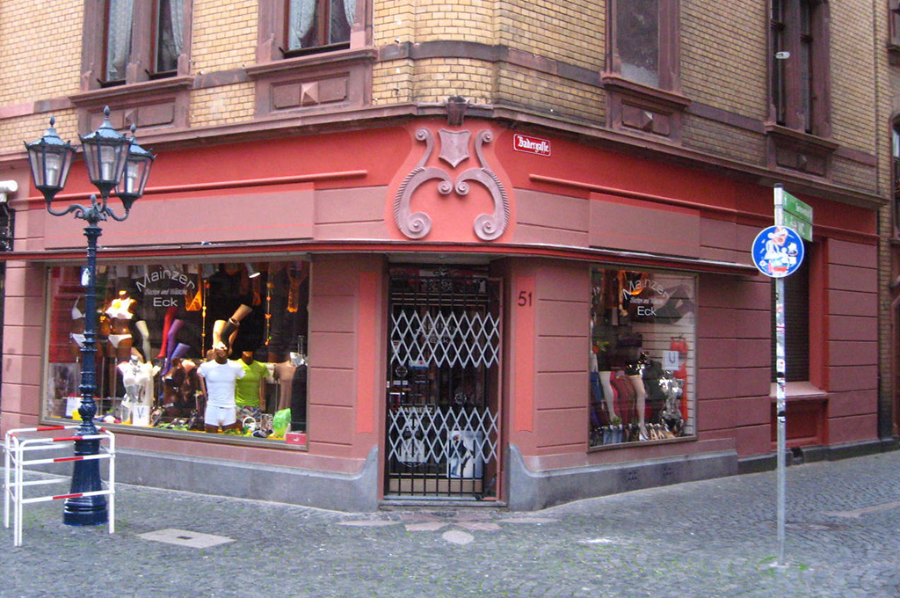

Putzarbeiten
Innen- und Außenputz im Bestand, Beiputz, Umbau, Sanierung sowie Arbeiten nach Brand- und Wasserschäden.

Maler- und Baudekoration aus Mainz seit 1948
Robert Nonnenmacher Baudekoration verbindet Malerhandwerk, Stuck, Putz, Trockenbau und kreative Wandgestaltung zu sauber geplanten Lösungen für private und gewerbliche Projekte.
Für Bestand, Sanierung und neue Gestaltung
Ob einzelne Wohnräume, Treppenhäuser, Fassaden oder komplette Renovierungen: Nonnenmacher steht für handwerkliche Ausführung, ehrliche Beratung und eine Gestaltung, die zum Gebäude passt.
Von der ersten Musterberatung bis zur fertigen Oberfläche zählt ein ruhiger Ablauf: sauber geplant, zuverlässig ausgeführt und passend zum Charakter des Gebäudes.
Leistungen
Für Innenräume, Fassaden und Sanierungen bietet der Meisterbetrieb die passenden handwerklichen Leistungen aus einer Hand.
Innen- und Außenputz im Bestand, Beiputz, Umbau, Sanierung sowie Arbeiten nach Brand- und Wasserschäden.
Neugestaltung, Reparatur und sorgfältige Arbeiten an historischen Details, Ornamenten und Bestandssubstanz.
Wohnungen, Büros, Türen, Fenster, Heizkörper, Holzverkleidungen und Lackierarbeiten mit sauberer Vorbereitung.
Papier-, Vlies-, Glasgewebe-, Bild-, Kunststoff- und Designtapeten inklusive Beratung mit Musterbüchern.
Decken und Wände aus Gipskarton im privaten Bereich, bei Bedarf ergänzt durch bewährte Partnerbetriebe.
PVC, Designbelag, Teppich, Linoleum und Laminat mit Musterkonfektionen in den eigenen Beratungsräumen.
Fassadenanstriche, farbliche Gestaltung, Putzüberarbeitung und energetisch sinnvolle Modernisierung.
Spachteltechniken, Lasuren und individuelle Oberflächen für Räume mit eigener Materialität.
Referenz aus Mainz
Von gereinigten und ausgebesserten Putzflächen bis zu farblich gefassten Details: Die Referenzen zeigen klassische Handwerksqualität an privaten Häusern, Geschäftsräumen und historischen Gebäuden.
Referenzen
Ein Einblick in Fassaden, Innenräume, Oberflächen, Böden und individuelle Gestaltungen aus abgeschlossenen Projekten.
Seit 1948
Gegründet von Malermeister Robert Nonnenmacher und heute in Familienhand weitergeführt: Die Baudekoration ist seit Jahrzehnten Teil des Mainzer Handwerks.
Robert Nonnenmacher gründet die Baudekoration.
Umzug in die Bilhildisstraße 15 und Wachstum im Wiederaufbau der Stadt Mainz.
Werner Nonnenmacher übernimmt den Betrieb und richtet ihn stärker auf private Kunden aus.
Bernd Nonnenmacher tritt nach erfolgreicher Meisterausbildung in Stuttgart in den Betrieb ein.
Bernd Nonnenmacher übernimmt die Baudekoration in dritter Generation.
Der neue Firmenstandort in Mainz-Hechtsheim wird errichtet.
Der Betrieb bleibt stabil und führt weiterhin Projekte in und um Mainz aus.
Modernisieren · Renovieren · Sanieren · Restaurieren
Im Meisterteam arbeiten verschiedene Handwerksbetriebe zusammen, damit Sanierungen besser koordiniert werden: verlässliche Abläufe, fachübergreifende Beratung, saubere Übergaben und ein hoher Qualitätsstandard.
Das Netzwerk ist besonders wertvoll bei umfangreichen Renovierungen, energetischem oder barrierefreiem Bauen und Projekten in der Denkmalpflege.
Meisterteam Mainz besuchenKontakt
Rufen Sie direkt an oder bereiten Sie eine E-Mail mit den wichtigsten Eckdaten vor. Die Anfrage wird in Ihrem E-Mail-Programm geöffnet.